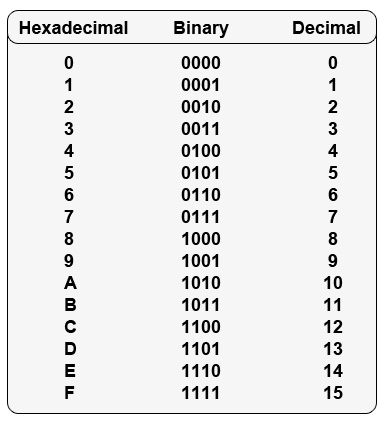
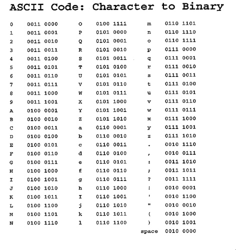

Ivy's Introduction to Computers
Computer System
Code Systems
Binary
Binary number system, also known as "base 2", uses only two digits, 0 and 1. It gives the computer an instruction and represents text or data using binary number system. It has 2 possible values like an on/off switch. Each 0 or 1 in the code is called a "bit" (BInary digiT), and 8-bit unit is called a "byte".

Hexadecimal
Hexadecimal is a translation code system to make it easier for humans to read and understand the codes. hexadecimal system, also known as "base 16", is based on 16 digits, from 0 to 9. It is used to show how binary is represented. 8-bit binary number can be written using only 2 hex digits (group of 4-bits)
ASCII
ASCII stands for American Standard Code for Information Interchange. ASCII code is the numerical representation of a character and it makes it easier to work with characters based on the English alphabets. It includes a-z, A-Z, 0-9, and also other symbols and punctuations.
Programming Languages
Low-Level
Low-level programming languages are close to machine languages and are the fastest when being executed. It is referred to as a first generation programming language and can be used to communicate directly with the computer. Assembly language is referred to as a second generation programming language and allows the programmer use meaningful names or abbreviations while using the same instructions and structure as machine languages.
High-Level
High-level programming languages are referred to as third generation programming languages. They were first developed in the late 1950s and have English-like instructions which is easier to use than machine languages. Examples of high-level language are C, Basic, and Pascal. When programmers use high-level languages, they need to use an interpreter or a compiler to convert the source code into machine language. (Interpreter : translates and executes an instruction before moving onto the next instruction // Compiler : converts an entire program)
Object-Oriented
Object-oriented programming languages are the most similar to English and easy to use. "Modules" in object-oriented languages contain "classes" which are groups of related data and actions. Therefore they allow programmers to use the modules over and over again in a variety of programs. Examples of OOP are C++, Java, and Visual Basic.